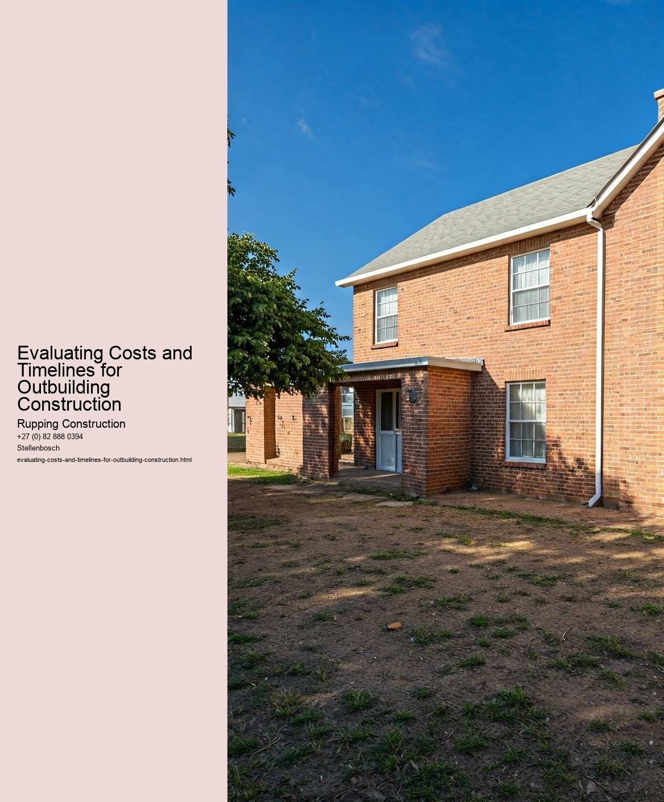

When considering the construction of an outbuilding, understanding the factors that influence construction costs is essential for effective planning and budgeting. Outbuildings, which can range from sheds and garages to more elaborate structures like workshops or guest houses, can vary significantly in terms of expenses based on various elements.
One of the primary factors influencing construction costs is the location of the project. The geographical area where the outbuilding will be constructed can have a profound impact on expenses. Urban areas typically face higher labor and material costs due to increased demand and limited space. Conversely, rural locations may offer lower costs but could present challenges such as longer transportation times for materials and skilled labor. Additionally, local building codes and regulations can affect costs; areas with stringent zoning laws may require more expensive permits or modifications to plans, which can add to the overall budget.
Another significant factor is the design and size of the outbuilding. Simple structures with basic designs will naturally cost less than more complex buildings that include specialized features such as plumbing, electrical systems, or unique architectural elements. Custom designs often require hiring architects or designers, which can further escalate costs. The size of the outbuilding also plays a crucial role; larger buildings require more materials and labor, leading to increased expenses.
Materials chosen for construction are another vital consideration. The type of materials used can greatly impact the overall cost. For instance, while wood may be less expensive than steel or brick for framing, its longevity and maintenance requirements can influence long-term costs. Sustainable or high-efficiency materials, while potentially higher in initial costs, may offer savings over time through reduced energy bills or lower maintenance needs.
Labor costs are another significant factor in determining the total cost of construction. Skilled labor can be expensive, and the availability of qualified workers can vary widely. In times of high demand, labor costs may rise considerably. Additionally, the complexity of the project will influence labor expenses; more intricate designs will require more skilled workers and additional time to complete.
Finally, external economic factors, such as inflation and supply chain fluctuations, can also affect construction costs. Prices for materials can rise unexpectedly due to market demand or shortages, impacting the overall budget. Consequently, it is crucial for those planning outbuilding construction to stay informed about market trends and to factor in potential fluctuations when estimating costs.
In conclusion, the construction costs of an outbuilding are influenced by a myriad of factors, including location, design, materials, labor, and broader economic conditions. Understanding these elements is key to creating a realistic budget and timeline for any construction project. By carefully considering each factor, individuals can make informed decisions that align with their financial goals and project aspirations.
Estimating project timelines is a crucial aspect of evaluating costs and timelines for outbuilding construction. When embarking on any construction project, particularly one involving outbuildings such as sheds, garages, or workshops, having a clear and realistic timeline is essential for effective planning and budget management. A well-thought-out timeline not only helps in setting expectations but also plays a significant role in ensuring the project stays on track and within budget.
The first step in estimating a project timeline involves a thorough understanding of the scope of work. This includes identifying the purpose of the outbuilding, its size, complexity, and the materials to be used. Each of these factors can significantly influence the time required for completion. For instance, a simple storage shed might take a few days to construct, while a more complex workshop with electrical installations could take several weeks or even months.
Next, it's important to break down the project into smaller, manageable tasks. This could include obtaining permits, preparing the site, laying the foundation, framing, roofing, installing utilities, and finishing touches. By segmenting the project, it becomes easier to estimate how long each phase will take. Additionally, considering potential delays-such as inclement weather, supply chain issues, or labor availability-can lead to a more realistic timeline.
Communication with contractors and suppliers is another vital component of accurate timeline estimation. Engaging with experienced professionals can provide insights into typical timelines for similar projects and help identify any common pitfalls that could cause delays. Moreover, establishing a good rapport with local building authorities can streamline the permitting process, which often becomes a bottleneck in construction timelines.
Another factor to consider is the impact of seasonal variations. Certain times of the year may be more conducive to construction than others, especially in regions with harsh winters or heavy rainfall. Planning the project timeline around favorable weather conditions can help avoid interruptions and maintain steady progress.
Finally, it's prudent to build in some buffer time. Even the most meticulously planned projects can encounter unexpected challenges. By adding extra time to the estimated timeline, project managers can accommodate unforeseen circumstances without derailing the entire project.
In conclusion, estimating project timelines for outbuilding construction is a multifaceted process that requires careful planning and consideration of various factors. By understanding the scope of work, breaking down tasks, communicating effectively, accounting for seasonal impacts, and incorporating buffer time, individuals and project managers can create a realistic timeline. This, in turn, facilitates better cost management, enhances project efficiency, and ultimately leads to a successful construction experience.
When embarking on a project as significant as outbuilding construction, one of the most critical steps is comparing quotes from various contractors. This process not only helps in evaluating costs but also plays a vital role in understanding the timelines associated with the project. Given the investment involved, both financially and in terms of time, it is essential to approach this task with diligence and a clear strategy.
First and foremost, obtaining multiple quotes is fundamental. Each contractor may have different pricing structures, materials, and labor costs, which can significantly impact the overall budget. A comprehensive comparison allows homeowners to identify the average market rate and spot any outliers-whether those are particularly high or low estimates. However, it is essential to look beyond the numbers. A lower quote might seem appealing at first glance, but it could indicate potential compromises in quality or service. Conversely, a higher quote might reflect superior materials or a contractor with a stellar reputation.
In addition to cost, timelines are another crucial factor to consider when comparing quotes. Different contractors will have varying schedules based on their current workload and resources. A contractor who can start immediately might seem attractive, but it's also important to assess their ability to complete the project within a reasonable timeframe. Delays can lead to increased costs and frustration, so understanding the proposed timeline and any potential risks associated with it is essential.
Furthermore, when evaluating quotes, it is beneficial to ask contractors about their project management practices. How do they handle unforeseen issues? What is their communication style? A contractor who is transparent and provides regular updates can make the construction process much smoother, alleviating stress and uncertainty.
Lastly, checking references and past work can provide invaluable insight. Speaking with previous clients gives a clearer picture of what to expect in terms of quality, reliability, and adherence to timelines. Online reviews and testimonials serve as additional resources, helping to paint a broader picture of a contractors reputation.
In conclusion, comparing quotes from contractors for outbuilding construction requires a careful balance of evaluating costs, timelines, and the overall quality of service. By taking the time to analyze each quote thoroughly and considering factors beyond the initial price, homeowners can make informed decisions that lead to successful and satisfying construction experiences. This methodical approach not only ensures that budgets are adhered to but also fosters a smoother construction process, ultimately leading to an outbuilding that meets both expectations and needs.
Budgeting for unexpected expenses is a crucial aspect of evaluating costs and timelines for outbuilding construction. When embarking on a project, whether it's a shed, garage, or workshop, it's easy to focus solely on the visible expenses like materials, labor, and permits. However, unforeseen costs can arise at any moment, potentially derailing the entire project if not adequately prepared for.
First and foremost, it's essential to understand that construction projects are inherently unpredictable. Factors such as weather conditions, soil quality, and even changes in local regulations can lead to unexpected complications. For example, if excavation reveals rocky soil or underground utilities, additional costs may arise for specialized equipment or labor. By budgeting for these contingencies, you can create a financial cushion that allows for adjustments without jeopardizing the projects overall viability.
To effectively budget for unexpected expenses, it's wise to set aside a percentage of the total project cost-typically around 10-20%. This reserve can be allocated specifically for unforeseen issues that may arise during construction. By doing so, you not only protect your financial interests but also enable a smoother workflow. Having this buffer can help maintain momentum, as you won't have to halt the project while scrambling to find additional funds.
Another important aspect is thorough planning and research before breaking ground. Engaging with experienced contractors and seeking their insights can provide a clearer picture of potential pitfalls and challenges specific to your project. They may highlight common issues based on their past experiences, allowing you to budget more accurately. Additionally, having a detailed timeline can help identify phases of construction where unexpected delays or costs might occur, giving you a better vantage point to prepare.
Moreover, it's essential to remain adaptable throughout the construction process. Even with a solid budget in place, unexpected expenses can still arise. Being flexible allows you to make informed decisions quickly, such as reallocating funds from less critical areas or adjusting timelines to accommodate necessary changes. This adaptability not only helps mitigate stress but also ensures that the quality of the construction isn't compromised due to financial constraints.
In conclusion, while budgeting for unexpected expenses may seem daunting, it is a fundamental part of evaluating costs and timelines for outbuilding construction. By anticipating potential challenges, setting aside a contingency fund, and remaining flexible, you can navigate the complexities of construction more effectively. Ultimately, this proactive approach not only safeguards your investment but also paves the way for a successful and timely completion of your outbuilding project.
Checklist for Compliance in Outbuilding Construction Projects
Evaluating the Benefits of Outbuilding Conversions for Homeowners